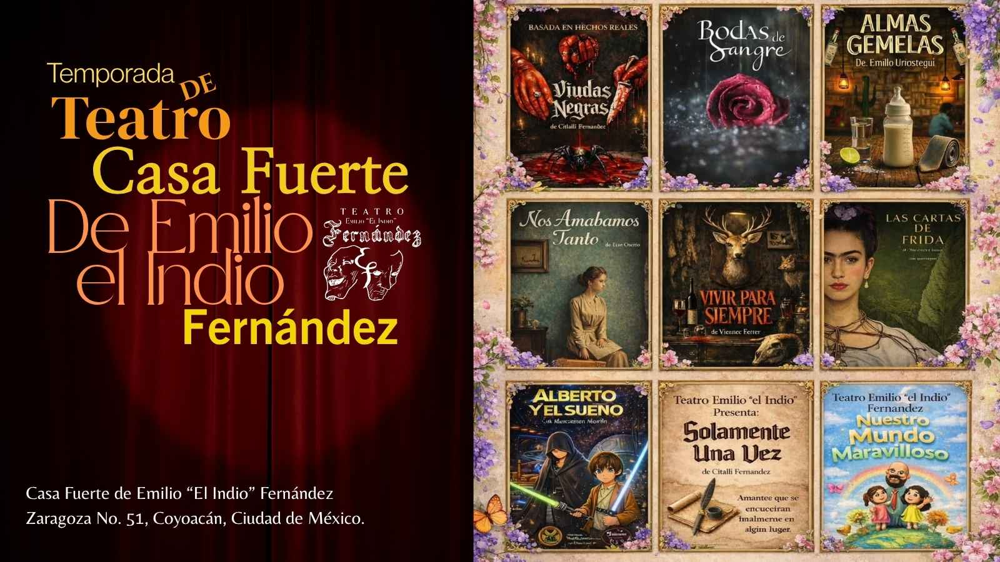

Sala de Prensa
Eventos, entrevistas y colaboraciones
Kakahuates Sinfónico
Este 18 y 19 de abril en la Ciudad de México, un evento que marcará historia organizado por la Axo Matsuri.
Por primera vez en Latinoamérica se presenta este concierto. Luis Carreño, la voz oficial de Bob Esponja en Latinoamérica, cantará todas las canciones en vivo acompañado de orquesta sinfónica
Será en Bosque de San Juan de Aragón, Puerta 2.
Autógrafos y fotografías con Luis Carreño: 11:00 am a 2:00 pm y 4:30 pm a 7:00 pm.
Ingresa y compra tus boletos aquí.TikTok en crecimiento
Con más de 2,500 seguidores en TikTok, GamesAlone18 Universe continúa expandiendo su comunidad mediante transmisiones en vivo, contenido constante e interacción directa. Este crecimiento posiciona a la plataforma como uno de los principales motores de alcance y conexión con nuevas audiencias.
Síguenos en Nuestro CanalCuentos de Terror con NotAlone18
Un proyecto original dentro del universo. Historias que rescatan el misterio y lo convierten en experiencia sonora. Cuentos de Terror con NotAlone18 no es un podcast. Es una atmósfera.
Comienza a escucharnosZona Restringida
Bienvenido a un espacio reservado únicamente para nuestra comunidad. Aquí descubrirás oportunidades únicas y contenido exclusivo que no estará disponible públicamente. Mantente atento y forma parte de este círculo privilegiado. Tu acceso exclusivo comienza aquí.
Accede al acceso exclusivo
Temporada de Teatro en la Casa Fuerte de Emilio “El Indio” Fernández
La temporada de teatro se presenta en Zaragoza No. 51 en Coyoacán. Este ciclo presenta seis obras que exploran el amor en todas sus dimensiones.
No te pierdas ninguna obraPresentación de nuevo EP
Los Karmann Ghia realizaron un concierto íntimo en el Foro La Piedad frente a fans y medios.
Vuelve a vivirlo
Cuentos de Terror en Villa del Carbón
Un episodio especial del podcast donde exploramos historias y leyendas del pueblo.
Escucha el capítulo
La Pastorela Más Impactante de Integración Chilanga
El elenco comparte historias de reinserción social y transformación personal.
Una obra que llega al corazón